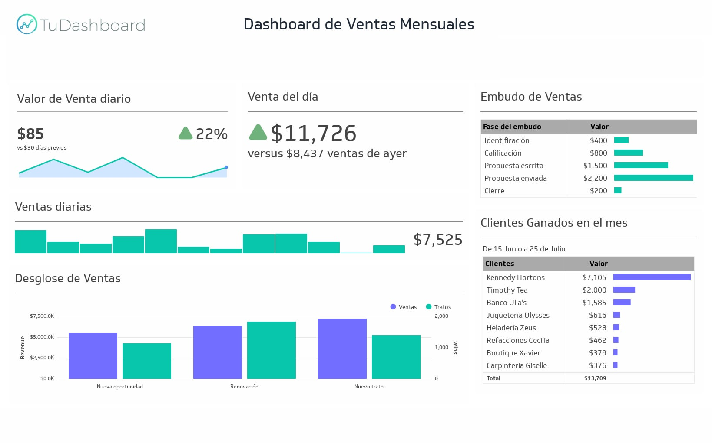
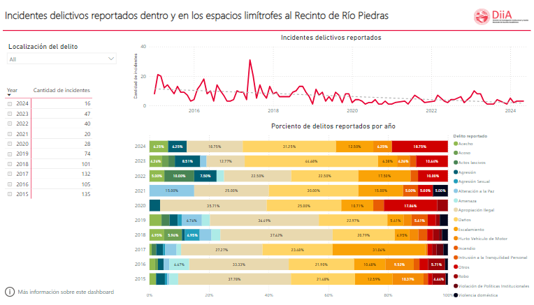

PROYECTOS
Un poco de los proyectos en los que estuve trabajando este ultimo tiempo. Todos redireccionan al repositorio correspondiente en GitHub

Indicadores de ventas
En este proyecto se trabaja acerca de los indicadores de ventas para una empresa, tanto analizando las ganancias como los clientes nuevos del proyecto.
Last updated 3 mins ago

Cantidad de Crimenes en Río Piedras
Se analiza los diferentes tipos de crimenes en esta ciudad que ocurrieron en los ultimos 10 años.
Last updated 3 mins ago

Criptomonedas con Redes Neuronales
Predicción del precio de criptomonedas utilizando redes neuronales LSTM, entrenadas con datos históricos de mercado y análisis de series temporales.
Last updated 3 mins ago